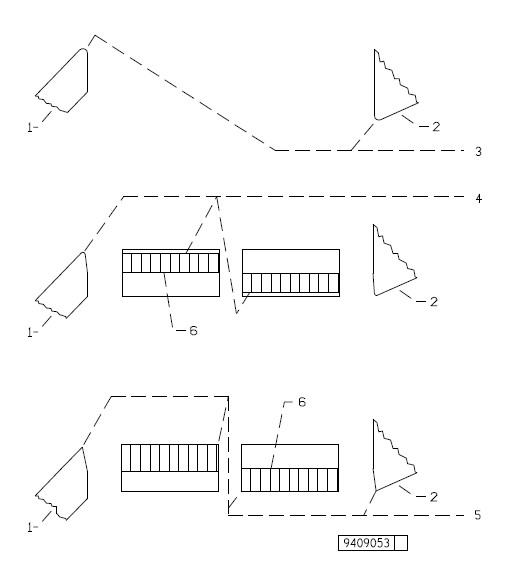

Only spot tune blades if cut quality becomes unacceptable on a portion of the blades, or if a complete blade tuning procedure cannot be done immediately. Perform a complete tune as soon as possible after a spot tune.
Blades are extremely sharp. Keep hands and fingers away from blades.
Never rotate cylinders forward through a cut with blade lapping compound on blades.
Use cut-resistant gloves to protect hands from sharp blades.
Blades will not lap with Automatic on.

1 |
Lower Blade |
4 |
Completely lapped upper and lower blades. Blade surface is lapped to asharp tip |
2 |
Upper Blade |
5 |
Partially lapped upper and lower blades. Lapped surface does not reach blade tip |
3 |
Upper and Lower Blades withRounded Tips |
6 |
Lapped Surfaces |
If final tune is being done within 2 hours after machine was taken out of production, tune blades to cut every fiber of the wet newspaper.
If final tune is being made after machine has cooled down (approximately 2 hours), DO NOT TUNE BLADES TO CUT EVERY FIBER OF THE WET NEWSPAPER. Blades will become too tight when machine reaches operating temperature. It is always better to retune than to tune too tightly and destroy blades.
Torque on manual rotation shaft needed to pass blades through a cut may be slightly higher than torque needed to rotate cylinders when not in cutting position. This torque difference should not be more than 7 Nm (60 in-lb) for sharp tip blades or 3 Nm (24 in-lb) for super sharp blades. If torque increase is greater than maximum values or blades will not pass through cut (NEVER FORCE BLADES THROUGH CUT), blades are adjusted too tightly together. See Loosening Tight Blades procedure in Maintenance section.
Do not spot tune more than twice without a complete retune.